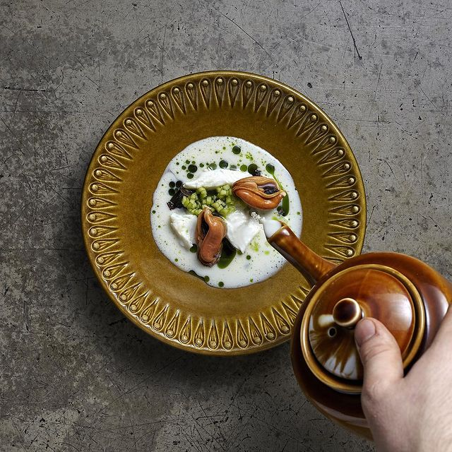

Halibut Soup
Inspired by Food & Drink Reykjavik

Description
Vegetable and lobster shell broth with butter boiled halibut and soured apples
Ingredients
- Halibut
- Lobster shells
- Chicken broth
- Green apples
- Apple cider vinegar
- Carrots
- Shallots
- Butter
Instructions
- Cut the halibut into bite-sized pieces
- Cut the vegetables and add them to the pot. Add a handful of lobster shells or substitute them with lobster broth and let it all boil for 3 minutes
- Now take the apple and peel it, cut it down into dice-sized bites. Add them to a bowl of hot apple vinegar for 15 minutes
- Boil the halibut in a mix of butter and chicken broth for 2-3 minutes
- Arrange the soured apples on the bottom of the bowl, add the fish on top, pour the soup. Sprinkle a couple of drops of basil-oil on top to finish
- Bon apetit